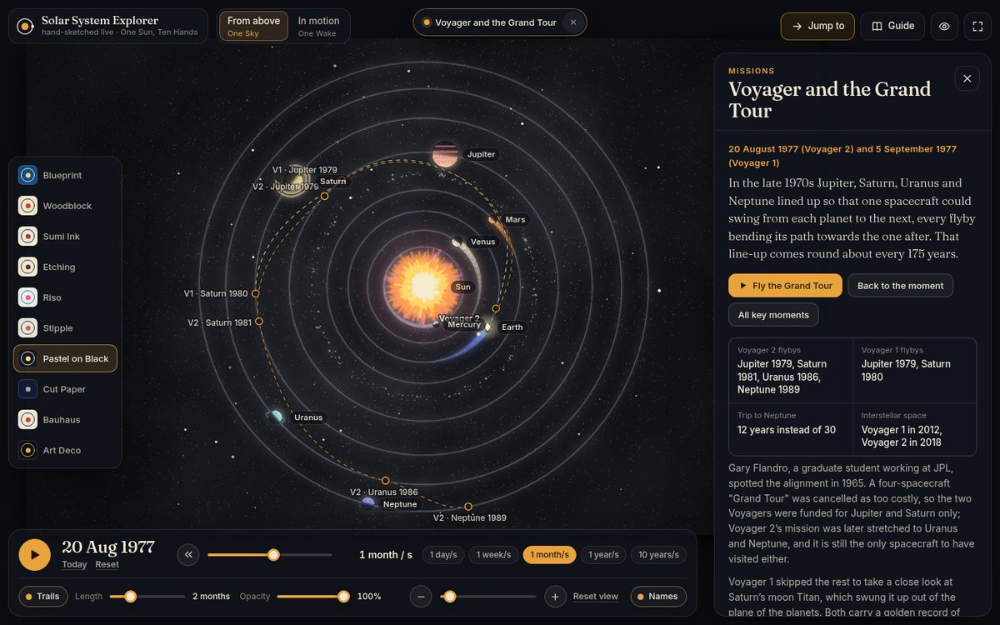

{kind=link}
S01
Blueprint
The draughtsman's plan
Laid out with a compass, then set running.
Download (HD)1080p · 24 fps · 7.1 MB Download (web)720p · 12 fps · 1.4 MB
Download the poster frame · 1080 JPEG · 235 KB

Drawn live in your browser
The same hand-sketched solar system, running live at the real positions of the planets on any date. Speed time up or run it backwards, switch between the ten styles, trail the planets’ wakes, zoom in, tap any world for its facts, and jump to launch windows, the Voyager Grand Tour and great conjunctions.
Open the explorerhand-sketch · the solar system from above
The same plan of the solar system drawn ten times, each in its own visual language. Every planet runs a whole number of orbits per loop, so each piece draws itself on and then circles forever without a seam. All ten are drawn in code, frame by frame.
S07
Light drawn in chalk
On black paper, only what is lit gets drawn.
Download (HD)1080p · 24 fps · 7.3 MB Download (web)720p · 12 fps · 1.3 MB
Download the poster frame · 1080 JPEG · 140 KB
Tap any piece to play it. Every clip is silent, square and free to download.
S01
The draughtsman's plan
Laid out with a compass, then set running.
Download (HD)1080p · 24 fps · 7.1 MB Download (web)720p · 12 fps · 1.4 MB
Download the poster frame · 1080 JPEG · 235 KB
S02
A print from carved blocks
Every orbit cut by hand, every planet a block of colour.
Download (HD)1080p · 24 fps · 4.9 MB Download (web)720p · 12 fps · 1.0 MB
Download the poster frame · 1080 JPEG · 210 KB
S03
A few strokes of the brush
One breath for each orbit.
Download (HD)1080p · 24 fps · 4.6 MB Download (web)720p · 12 fps · 888 KB
Download the poster frame · 1080 JPEG · 94 KB
S04
An engraved plate
Tone is only ever the density of lines.
Download (HD)1080p · 24 fps · 8.1 MB Download (web)720p · 12 fps · 1.4 MB
Download the poster frame · 1080 JPEG · 558 KB
S05
A three-ink poster
Blue, pink and yellow, and everything else is an overprint.
Download (HD)1080p · 24 fps · 14.8 MB Download (web)720p · 12 fps · 2.6 MB
Download the poster frame · 1080 JPEG · 1.2 MB
S06
A plan in single dots
Every orbit, every shadow, one dot at a time.
Download (HD)1080p · 24 fps · 8.2 MB Download (web)720p · 12 fps · 1.9 MB
Download the poster frame · 1080 JPEG · 273 KB
S08
A paper diorama
Eight sheets of blue, and a sun cut from three.
Download (HD)1080p · 24 fps · 4.4 MB Download (web)720p · 12 fps · 782 KB
Download the poster frame · 1080 JPEG · 92 KB
S09
Primary geometry
Circles, halves and squares in three colours.
Download (HD)1080p · 24 fps · 4.3 MB Download (web)720p · 12 fps · 1.1 MB
Download the poster frame · 1080 JPEG · 157 KB
S10
A radiant sunburst
Gold on lacquer, opening like a fan.
Download (HD)1080p · 24 fps · 6.8 MB Download (web)720p · 12 fps · 1.4 MB
Download the poster frame · 1080 JPEG · 293 KB
hand-sketch · the solar system at an angle, in motion
The same solar system seen at an angle while the Sun travels through space, so each orbit trails behind its planet as a spiral: Mercury a tight, fast corkscrew, Neptune one long, lazy turn. Tilted and exaggerated for the eye rather than to scale, in the same ten visual languages on the same seamless clock.
SP07
Trails of light
On black paper, the wake of every planet is drawn in light.
Download (HD)1080p · 24 fps · 10.7 MB Download (web)720p · 12 fps · 2.3 MB
Download the poster frame · 1080 JPEG · 128 KB
Tap any piece to play it. Every clip is silent, square and free to download.
SP01
A spring on the board
Drawn as an engineer draws a spring: axis, coils, hidden lines.
Download (HD)1080p · 24 fps · 11.4 MB Download (web)720p · 12 fps · 2.7 MB
Download the poster frame · 1080 JPEG · 159 KB
SP02
Streams cut in the block
Every wake a band of block colour, cut like a stream.
Download (HD)1080p · 24 fps · 14.9 MB Download (web)720p · 12 fps · 3.3 MB
Download the poster frame · 1080 JPEG · 205 KB
SP03
One stroke for each wake
Each wake one stroke of the brush, running dry as it goes back.
Download (HD)1080p · 24 fps · 8.9 MB Download (web)720p · 12 fps · 1.8 MB
Download the poster frame · 1080 JPEG · 79 KB
SP04
Engraved ribbons
Tone is only ever the density of lines, even in a spiral.
Download (HD)1080p · 24 fps · 29.5 MB Download (web)720p · 12 fps · 6.0 MB
Download the poster frame · 1080 JPEG · 608 KB
SP05
Three inks in a spin
Solid in front, screened behind, and everything an overprint.
Download (HD)1080p · 24 fps · 33.1 MB Download (web)720p · 12 fps · 6.8 MB
Download the poster frame · 1080 JPEG · 1.2 MB
SP06
Spirals in single dots
Every coil, every shadow, one dot at a time.
Download (HD)1080p · 24 fps · 21.6 MB Download (web)720p · 12 fps · 5.9 MB
Download the poster frame · 1080 JPEG · 318 KB
SP08
Strips of paper in a spiral
Every wake a string of paper strips, darker as it goes.
Download (HD)1080p · 24 fps · 11.3 MB Download (web)720p · 12 fps · 2.4 MB
Download the poster frame · 1080 JPEG · 158 KB
SP09
Bands, rules and circles
Colour in front, a black line behind, and circles at the end.
Download (HD)1080p · 24 fps · 12.8 MB Download (web)720p · 12 fps · 3.6 MB
Download the poster frame · 1080 JPEG · 152 KB
SP10
Gold pinstripes
Gold pinstripes on lacquer, wound into a spiral.
Download (HD)1080p · 24 fps · 13.9 MB Download (web)720p · 12 fps · 2.9 MB
Download the poster frame · 1080 JPEG · 190 KB
{kind=link}
{kind=link}
{kind=link}
{kind=link}
{kind=link}
{kind=link}
{kind=link}
{kind=link}
{kind=link}
{kind=link}
{kind=link}
{kind=link}
{kind=link}
{kind=link}
{kind=link}
{kind=link}
{kind=link}
{kind=link}
{kind=link}